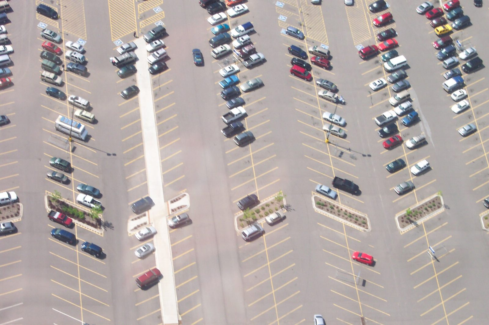
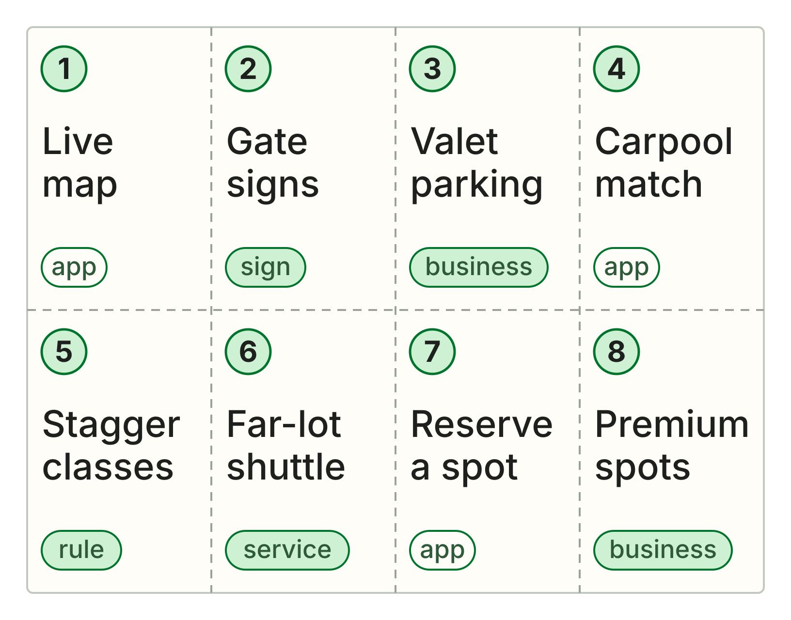

This week
Let’s invent a product.
No code. Your group picks a real problem and comes up with a fix.
The chapter on BevyGDG on Campus Riverside City College is an independent group; our activities and the opinions expressed here should in no way be linked to Google, the corporation.
Your call
How would you fix parking at RCC?
Shout it out. First idea that comes to mind.
Look closer
From up here, you can see open spots.
From your car, you can’t. So is the problem too few spots, or not knowing where they are?

Today
Your group picks a problem and invents a fix.
No code. As you work, we’ll add real-world problems your idea has to handle.
One phone per group
Fill this in as you go.
It walks you through every step, gives you a push when you’re stuck, and builds your pitch at the end.
What annoyed you this week?
5 minutes · in your group
- Everyone names one thing.
- Pick one you’ve felt yourself.
- Stuck? Try parking or scalpers.
- Check: Who do you know who has it?
Why does it happen?
8 minutes · one question at a time
- Who has it? Be exact.
- When is it worst?
- What do they do about it now?
- Why hasn’t anyone fixed it?
- Write it: ___ can’t ___ because ___.
Crazy 8s
Eight ideas in eight minutes
Fold a sheet into eight boxes. One idea per box.

Fill all eight boxes.
8 minutes · on your own
- One idea per box. No talking yet.
- Box 3: How would an airline do it?
- Box 4: Who’d fix this for money?
- Box 5: Fix it with a new rule.
- Box 7: Your weirdest idea.
Pick one and build it out.
6 minutes · in your group
- Share your best two, then vote.
- Give it a name.
- How does it work? Three steps.
- Who pays for it?
- Check: Look it up. Does it exist?
What would actually happen?
Challenge checks · 5 minutes
- Who are your first 10 users?
- It costs money every month. Who pays?
- The school says no. What’s plan B?
- A big company copies you. Now what?
- Would people trust it with their info?
Plan your pitch with STAR
60 seconds, in this order
- S · Who has the problem, and when?
- T · What has to change? Your because.
- A · What you built, in three steps.
- R · What gets better, and who pays.
- Then one challenge you fixed.
Pitches · 60 seconds each
Pitch it with STAR.
1:00
Situation, task, action, result, then one challenge you fixed. After that, one question from the room.
Vote
Which one would you actually use?
Hands up for each one. You can vote for more than one.
What just happened
The best ideas came from the why.
Compare them to the parking ideas we shouted at the start.
Before next Thursday
Ask one person who has your problem if they’d use your idea.
Bring back what they said, even if it’s no.
Thursdays, 2:30 to 3:30 PM · BLCIS A-210
GDG on Campus Riverside City College is an independent group; our activities and the opinions expressed here should in no way be linked to Google, the corporation.